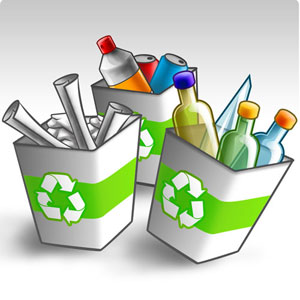
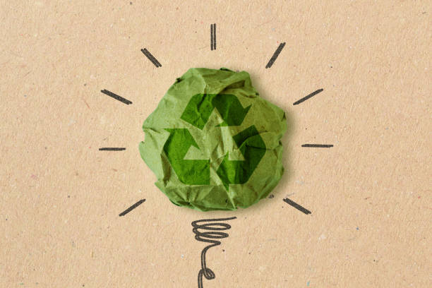

El reciclaje es la recolección y el procesamiento de desechos como el papel y cartón, vidrio
o plástico. Este supone crear nuevos productos basados en esos mismos materiales. Una nueva
oportunidad para la Tierra, a la que se puede proteger si se entienden los beneficios del
reciclaje, la manera correcta de separar los residuos y los retos a los que se enfrenta esta
actividad.
De ahí su beneficio para el medioambiente, como explica Ranjit Baxi, presidente y fundador de
la Global Recycling Foundation: “Hablamos de un esfuerzo colectivo y un asunto crucial para
el futuro del planeta porque nadie puede actuar de forma aislada. Es imperativo que
involucremos a la población más amplia posible, desde líderes mundiales a empresas y personas,
sin importar dónde se encuentren”.

El reciclaje de residuos es esencial para cuidar el medioambiente. Al reciclar, no solo reducimos la cantidad de desechos, sino que también damos nuevos usos a objetos, protegiendo así los recursos naturales y las generaciones futuras. Este proceso contribuye a la sostenibilidad global y promueve una sociedad más responsable.
Reciclando los envases reutilizamos estos materiales, ahorrando estos recursos naturales y ayudando a conservar la naturaleza. Así ayudamos a generar enormes beneficios en todos los ámbitos. En el año 2023, gracias al reciclaje, 1.683.890 toneladas de envases han sido recicladas, lo que supone un 3,5% más respecto al año anterior y un 12% más que hace cinco años.
En la extracción y transporte de las materias primas necesarias para crear nuevos productos se
emplean grandes cantidades de agua y energía. Gracias al reciclaje, se produciría un ahorro de
energía. Solo en 2023, la labor de reciclaje supuso el ahorro de 9,84 millones de MWH de energía;
15,53 millones de m3 de agua y evitó la emisión de 1,7 millones de toneladas de CO2 a la
atmósfera.
Ya conocemos los efectos de los gases de efecto invernadero. Como comentamos anteriormente, al
producir nuevos objetos a partir de materiales reciclados, evitamos la extracción de materias
primas, lo que reduce las emisiones de gases contaminantes a la atmósfera y contribuye contra
el cambio climático.